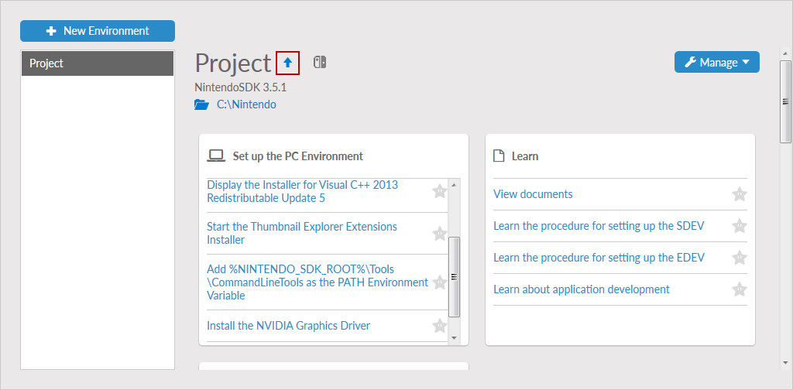
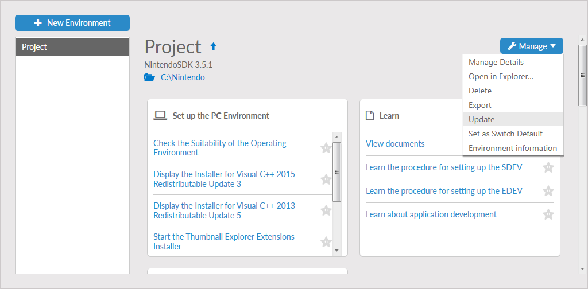

After a development environment is created, new versions of the installed software may be published. This is indicated in Nintendo Dev Interface (NDI) by a blue arrow. The blue arrow points upwards next to the environment name on the Dev Environments screen when an environment is selected. Updating an environment installs the latest available patch version of the software it contains (in example, version 3.5.1 would update to version 3.5.2, but not to version 3.6.0).
To update an environment, follow these steps.
- Start NDI and select Dev Environments.
- The environments screen is displayed. In the list on the left, select the environment that has an update. The blue arrow icon indicates an update is available.

- Click the Manage button and select Update from the menu.

- NDI connects to the server and finds the update files. A screen is displayed indicating which software will be updated, including the current version and the version after update. Click Update in the lower-right corner of the screen to continue.
- The updated software is downloaded and installed automatically. After the process is complete, click Finish to return to the Dev Environments screen.